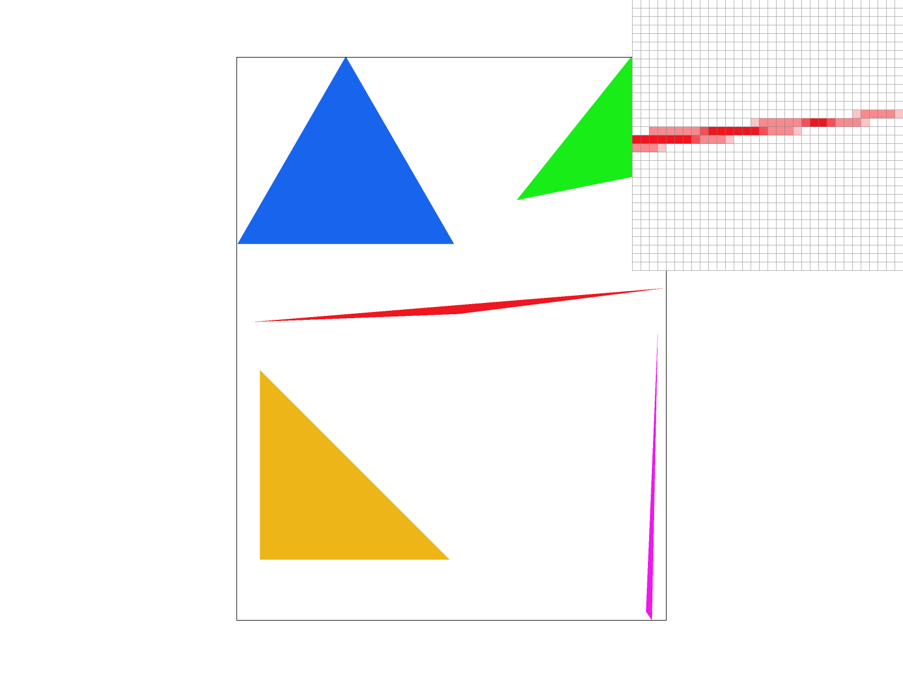
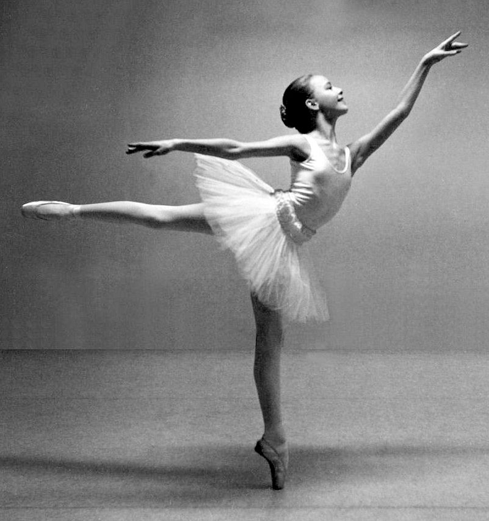

Overview
This project explored various methods for rasterization. I learned how to implement antialiasing methods, including supersampling, pixel sampling, and level sampling (mipmapping). I enjoyed experimenting with svg transforms, linear interpolation using barycentric coordinates, and texture mapping to produce interesting images.
Section I: Rasterization
Part 1: Rasterizing single-color triangles
The basic triangle rasterization algorithm takes in three (x,y) vertices and rasterizes the triangle within the points. First, we ensure that the points are oriented clockwise by comparing the slopes of the line segments, swapping two points if counterclockwise. We then compute the bounding box of the vertices by finding the minimum and maximum x and y values. For each pixel within the bounding box, we check if the sample (center of pixel) is inside the triangle, and fill the pixel if so. The point-in-triangle check is three line tests that take dot products with each edge normal, which does not increase the time complexity.
Part 2: Antialiasing triangles
The supersampling algorithm is similar to the basic rasterization algorithm, except each pixel is filled by the average color of its evenly-divided supersamples.
We essentially first rasterize a high-resolution image into the sample buffer, where each supersample is a pixel, which requires temporary additional memory.
We then downsample the image into the correct dimensions, populating the framebuffer by averaging the supersampled values corresponding to each original pixel.
Supersampling is useful for simple antialiasing. Because each pixel is now rasterized with the average color, edges and vertices are rendered much smoother.
In the below images, the pixel inspector is focused on the red triangle's right vertex. In the basic algorithm, there is a gap between the rightmost pixels and the rest of the triangle.
This is because the samples in the gap that were chosen happened to fall outside the triangle, but the triangle does cross through those pixels.
Supersampling fixes the gap with antialiasing, as a light red is rasterized instead of pure white. The sharp edges are overall blurred and smoothed.
|
|

|
|
|
|
Part 3: Transforms
Cubeman is now a ballet dancer! This is cubeman's attempt at an arabesque pose (he's trying his best). This involved lengthening the robot's legs, turning it pink, and editing the rotations and translations.
|  |
Section II: Sampling
Part 4: Barycentric coordinates
Barycentric coordinates are a system of coordinates used to represent points in relation to a simplex. In 2d space, the polygon is a triangle; in 3d space, it is a tetrahedron; and so on for higher dimensions. A point is defined as the center of mass/barycenter of its coordinates, where the masses are placed at the simplex's vertices. A point is inside the simplex if and only if all coordinates are positive (inside or on the boundary if and only if all coordinates are nonnegative). Note that barycentric coordinates are unique if normalized, or defined up to multiplication by a nonzero constant.
|
|

|
Part 5: "Pixel sampling" for texture mapping
Pixel sampling refers to the process of applying a texture map when rendering an image.
Textures can be used to add detail, surface characteristics, color variation, and other aspects.
For each pixel in the screen space, we determine the corresponding texel in the texture map.
Note that we first scale the x coordinate by the width of the mipmap and the y coordinate by the height.
For nearest neighbor sampling, we simply return the closest texel by rounding the resulting coordinates.
For bilinear sampling, we use floors and ceilings to interpolate between the four surrounding texels.
We perform three linear interpolations: horizontally across the top left and top right,
horizontally across the bottom left and bottom right, and vertically across the results.
In the images below, we see that bilinear sampling outperforms nearest neighbor sampling.
Bilienar sampling looks much smoother and blended because it uses linear interpolation in two directions.
This is especially evident with no supersampling (top row), as each pixel is directly rasterized based on the closest texel to the 1 sample.
When the supersampling rate is higher (bottom row), there is already some antialiasing functionality, so the difference is less apparent.
|
|
|
|
|
|
Part 6: "Level sampling" with mipmaps for texture mapping
Mipmapping involves creating a series of pre-filtered and pre-scaled versions of a texture at different levels of detail.
The mipmaps are stored in memory alongside the original texture and selected to match the required detail in the rasterized image.
Larger objects and objects closer to the camera need higher-resolution textures, whereas smaller or farther objects use lower-resolution textures.
The zeroth level is just the full-resolution image. Nearest level sampling computes the closest mipmap level with rounding.
Bilinear level sampling computes the mipmap level as the average of the two adjacent levels with floors and ceilings.
The appropriate mipmap level was calculated using barycentric coordinates and derivatives, scaled by the texture image's dimensions.
In the images below, it seems that level sampling (rows) has a larger antialiasing effect compared to pixel sampling (columns) when texture mapping, but requires more memory to store the precomputed mipmaps.
Mipmapping also tends to render faster, especially with hardware acceleration support. Both improvements are much clearer with no supersampling. Supersampling has high antialiasing power,
but requires significant temporary storage for the rendered high-resolution image, typically involving a higher memory overhead and slower rendering than both texture sampling methods.
|
|

|
|
|
|
|
|
|